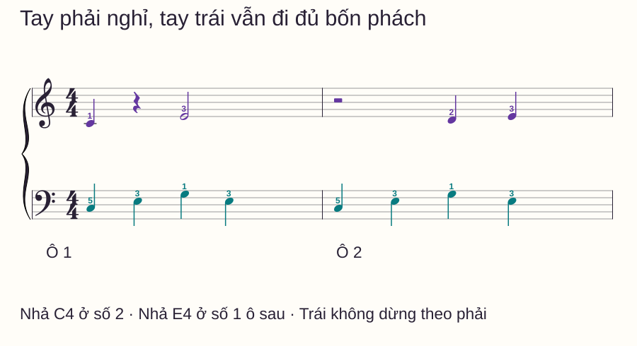
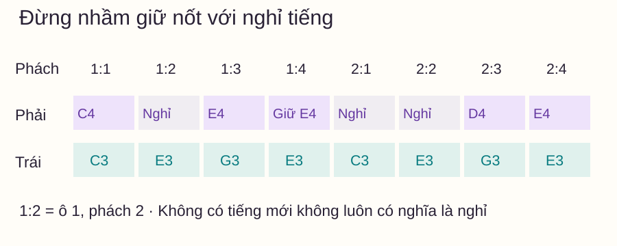
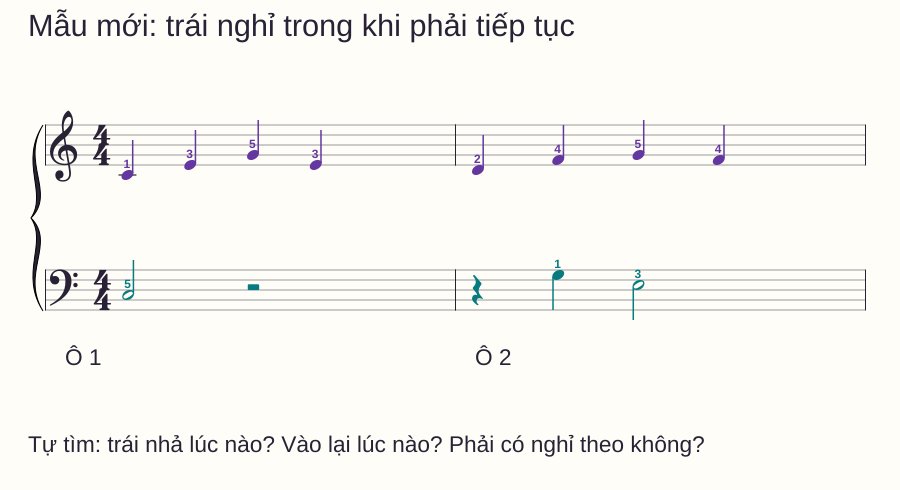

Nhịp và tiết tấu
Dấu lặng piano: nhả đúng lúc khi tay kia vẫn tiếp tục chơi
Bạn thấy dấu nghỉ ở tay phải và dừng cả hai tay. Hoặc tay trái vẫn đi đều nhưng ngón phải giữ nguyên phím, khiến khoảng đáng lẽ im lại còn ngân. Cả hai lỗi đều có thể xảy ra dù bạn đếm đúng số phách.
Bạn thấy dấu nghỉ ở tay phải và dừng cả hai tay. Hoặc tay trái vẫn đi đều nhưng ngón phải giữ nguyên phím, khiến khoảng đáng lẽ im lại còn ngân. Cả hai lỗi đều có thể xảy ra dù bạn đếm đúng số phách.
Bài này tập một việc cụ thể: cho một tay ngừng phát âm đúng lúc trong khi tay kia tiếp tục. Bạn sẽ dùng câu hai ô nhịp, lưới hành động và một mẫu đổi vai để kiểm tra. Chưa dùng pedal vì tiếng ngân do pedal sẽ làm khó nghe chỗ nhả.
Trả lời nhanh
Dấu lặng dành một khoảng thời gian không phát âm cho bè đang đọc; nhịp đếm vẫn tiếp tục. Trong bài 4/4 này, lặng đen dài một phách, lặng trắng dài hai phách. Nếu tay phải chơi C4 ở số 1 rồi lặng ở số 2, hãy nhả C4 khi tới số 2 và đếm qua khoảng nghỉ, trong khi tay trái vẫn chơi phần của mình. Đừng nhầm nghỉ với giữ: nốt trắng không đánh lại ở phách thứ hai nhưng ngón vẫn giữ phím; dấu lặng yêu cầu kết thúc âm trước đó. Tập riêng hành động nhả rồi ghép hai tay ở tốc độ chuẩn bị được.
Nhìn ký hiệu trước khi đặt tay
Lặng đen có hình nét gấp và móc; lặng trắng là hình chữ nhật nhỏ đặt trên một dòng kẻ. Lặng tròn thường treo dưới dòng kẻ; khi dùng làm ký hiệu nghỉ cả ô, nó biểu thị cả ô nhịp theo ngữ cảnh, không nên mặc định mọi ô đều bốn phách. Bài dưới chỉ dùng lặng đen và lặng trắng trong 4/4.
Faber Piano Adventures xếp các dấu lặng vào nhóm kiến thức nền Level 1. Hoffman Academy, bài 90 minh họa việc một tay nghỉ khi tay kia còn chơi. Câu nhạc và cách tự kiểm dưới đây được biên soạn riêng.
Chuẩn bị: biết nốt, biết ngón, bỏ pedal
C4 là Đô giữa. Tay phải đặt ngón 1–5 trên C4–D4–E4–F4–G4; tay trái đặt 5–4–3–2–1 trên C3–D3–E3–F3–G3. Ngón 1 là cái, 5 là út. Hai tay ở hai vùng khác nhau, không tranh cùng một phím.
Chọn tempo đủ để gọi trước việc kế tiếp. Có thể dùng metronome, mỗi click là một phách đen. Đếm một ô “1–2–3–4” dẫn vào. Không cần tăng tốc trong buổi tập này.

Học điểm nhả trước khi ghép
Chỉ chơi phải ở ô 1: C4 tại 1, nhả tại 2, E4 tại 3 và giữ qua 4. Tiếp tục đếm số 1 của ô 2 để nhả E4. Không chờ đến lúc D4 xuất hiện ở số 3 mới nhả; như vậy hai phách nghỉ đã bị biến thành giữ âm.
Tay được thư giãn gần phím trong phần nghỉ. Không cần hất cả bàn tay lên cao để chứng minh đang nghỉ. Chuẩn bị D4 trước điểm vào số 3 nhưng chưa làm phím phát tiếng.
Chơi riêng trái: C3–E3–G3–E3, mỗi nốt một phách, lặp ở ô sau. Qua vạch ô, C3 được đánh mới. Khi đã rõ cả hai dòng, thử ghép riêng phách 1–2 ô 1: số 1 cả hai vào, số 2 trái đổi sang E3 còn phải nhả C4. Đây là điểm hai tay cần hành động khác nhau.
Lưới phân biệt đánh, giữ và nghỉ

| Vị trí | Phải | Trái | Điều cần nghe |
|---|---|---|---|
| Ô 1, số 2 | Nhả C4, nghỉ | Đánh E3 | C4 kết thúc, trái vẫn rõ |
| Ô 1, số 4 | Giữ E4 | Đánh E3 | E4 còn ngân, không bấm lại |
| Ô 2, số 1 | Nhả E4, bắt đầu nghỉ | Đánh C3 | Chỉ còn phần trái |
| Ô 2, số 3 | Đánh D4 | Đánh G3 | Hai tay cùng vào đúng số 3 |
Trên piano cơ, âm có thể còn đuôi vang trong phòng sau khi nhả phím; mục tiêu là không tiếp tục giữ âm bằng phím hoặc pedal. Trên đàn điện, kiểm pedal sustain đã nhả và không dùng chế độ giữ âm tự động.
Mẫu mới: tay trái có dấu lặng

Trước khi đàn, tự trả lời: trái nhả C3 lúc nào, vào lại lúc nào, và phải có ngừng ở các điểm ấy không? Sau đó chơi từng tay rồi ghép. Cuối câu, giữ E3 qua phách 4, nhả ở số 1 tưởng tượng của ô tiếp theo.
Đáp án mẫu mới
Trái chơi C3 ở số 1 ô 1, giữ qua 2, nhả tại 3 và nghỉ 3–4. Đầu ô 2 vẫn nghỉ qua số 1; G3 vào tại 2, E3 tại 3 và giữ qua 4. Phải chơi đủ tám nốt đen, không nghỉ theo trái. Trái có ba điểm tạo tiếng trong cả câu.
Routine mười phút và cách sửa lỗi
- 0–2 phút: đọc ký hiệu, chỉ đúng điểm nhả trong câu đầu; đếm chưa đàn.
- 2–4 phút: chơi riêng phải, nghe khác biệt giữ ở 4 và nghỉ đầu ô sau.
- 4–6 phút: ghép trái, tập riêng phách 1–2 rồi nối đủ câu.
- 6–8 phút: kiểm mẫu đổi vai từng tay, trả lời câu hỏi trước đáp án.
- 8–10 phút: ghép mẫu mới và ghi một điểm nhả hoặc vào lại còn lệch.
| Lỗi nghe thấy | Thử sửa |
|---|---|
| Cả hai im khi phải nghỉ | Chơi trái riêng rồi thêm duy nhất C4 và động tác nhả ở 2 |
| Phải ngân xuyên dấu lặng | Bỏ pedal, đọc thành lời “đánh–nhả–đánh–giữ” |
| Vào lại chậm sau hai phách nghỉ | Đếm 1–2 trong phần im và chuẩn bị D4 trước số 3 |
| Nhả E4 ở phách 4 ô 1 | Chỉ ra dấu trắng: còn giữ qua 4, tới đầu ô sau mới nghỉ |
Kết thúc buổi khi bạn có thể chỉ đúng và thực hiện điểm nhả ở cả hai mẫu. Nếu vẫn lẫn, giữ đoạn ngắn thay vì thêm nốt hoặc tăng BPM. Bài ghép hai tay hỗ trợ các điểm cùng vào; bài đếm nhịp ôn đơn vị trường độ.
Nếu phần nghỉ đã rõ, thử đổi giữa nốt đen và móc đơn để giữ cùng phách khi số tiếng thay đổi. Bài nốt chấm dôi dành cho bước đếm độ dài có nửa phách.
Câu hỏi thường gặp
Có dấu lặng là cả hai tay đều ngừng không?
Không. Đọc từng bè trên sheet. Trong các mẫu này, dấu lặng thuộc tay có ký hiệu đó; tay kia tiếp tục theo phần nhạc riêng.
Không đánh nốt mới có luôn là nghỉ không?
Không. Khi giữ nốt trắng, bạn không đánh lại nhưng vẫn giữ âm. Khi tới dấu lặng sau nốt, phải kết thúc âm theo thời điểm đã ghi.
Có cần nhấc tay cao ở dấu lặng không?
Không. Chỉ cần nhả phím đủ để kết thúc âm và chuẩn bị vị trí tiếp theo. Động tác lớn có thể khiến bạn vào lại chậm.
Có được dùng pedal trong bài này không?
Hãy bỏ pedal để nghe rõ nhả phím. Trong tác phẩm có pedal, âm thực nghe còn phụ thuộc chỉ dẫn pedal và cách xử lý bè; đó là nhiệm vụ khác với mẫu nhập môn này.
Lặng trắng luôn dài hai phách phải không?
Ở bài 4/4 này, đúng. Giá trị theo số phách còn phụ thuộc đơn vị phách đang dùng; đừng mang phép đếm này sang mọi loại nhịp.
Vì sao gõ trên bàn đúng nhưng đàn vẫn sai?
Tiếng gõ tự tắt nên dễ chỉ kiểm lúc bắt đầu. Piano còn đòi hỏi nhả phím đúng lúc; thử một phím trước để tách việc nhả khỏi tìm cao độ.
Nguồn và ghi chú biên soạn
- Open Music Theory — Rhythmic values: đối chiếu quan hệ trường độ và dấu lặng.
- Faber — Level 1 Things To Know: đối chiếu phạm vi nền tảng.
- Hoffman Academy — Lesson 90: đọc transcript công khai về một tay nghỉ khi tay kia chơi.
- Kiểm nguồn ngày 02/11/2026. Hai câu nhạc, lưới, hình và routine được biên soạn riêng. Bản thảo chưa có giáo viên độc lập duyệt hoặc thử nghiệm với học viên.